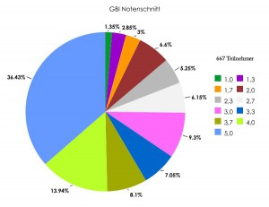

Für die Klausur in den Grundbegriffe der Informatik (GBI) sollte man Folgendes auf jeden Fall wissen:
- Wie funktionieren Induktionsbeweise? → Antwort
- Was ist ein Alphabet, eine formale Sprache und was eine formale Grammatik? → Antwort
- Was bedeuten für zwei Formale Sprachen $L_1, L_2$ folgende binären Operationen:$\cdot, \cup, \cap, \setminus, L_1^3, L^+, L^*$? → Antwort
- Was ist eine Abbildung, was eine Relation? → Antwort
- Was ist Injektivität, Surjektivität, Bijektivität, Reflexivität, Symmetrie, Antisymmetrie und Transitivität? → Antwort
- Wie ist eine Äquivalenzrelation, eine Ordnungsrelation, eine Halbordnung und eine Totalordnung definiert? → Antwort
- Wie ist ein minimales Element und wie das kleinste Element einer Halbordnung definiert? → Antwort
- Wie sind die Landau-Symbole $\cal O(f(n)), \Theta(f(n)), \Omega(f(n))$ definiert? → Antwort und Nachtrag
- Was ist eine Turingmaschine und wie gibt man eine Konfiguration davon an?
- Wie ist ein Graph definiert und wie ein Baum? → Antwort
- Wann sind zwei Graphen isomorph?
- Was ist ein Pfad, eine Schlinge, ein Kreis und ein Zyklus?
- Wann ist ein Graph zusammenhängend und wann vollständig / streng zusammenhängend?
- Was ist eine Adjazenzmatrix und was ist eine Wegematrix?
- Wie lautet die Wahrheitstabelle von $A \Rightarrow B$?
- Wie unterscheiden sich Mealy- und Moore-Automaten? Welche Sprachen akzeptieren sie und wie stellt man sie dar?
- Was ist eine Huffman-Kodierung und wie stellt man sie dar?
- Was haben alle Wörter einer Äquivalenzklasse der Nerode-Relation gemeinsam?
- Was ist ein Hasse-Diagramm?
- Wie lautet das Master-Theorem? → Antwort
Wenn die Antwort auf eine dieser Fragen noch unklar ist, sollte man sich das Skript nochmals anschauen.
Was man auf jeden Fall üben sollte, sind die Aufgaben zu Turingmaschinen. Das kommt sicher dran und man ist sicher zu langsam, wenn man nicht ein paar Aufgaben dazu macht.
Some Random Facts
- Ein Mebibyte (MiB) sind $2^{20}$ Byte, ein Megabyte (MB) sind $10^6$ Byte.
- $\{\varepsilon\} \neq \emptyset = \{\}$
- $\cal P(\emptyset) = \{\emptyset\} = \{\{\}\}$ und $|{\cal P}(\emptyset)| = 1$, aber $|\emptyset| = 0$.
- $Num_2(111)$ ist die Zahl 7, $Repr_2$(die Zahl 7) = 111
- $\langle \emptyset \rangle = \{\}$ und $\langle \emptyset * \rangle = \{\varepsilon\}$
- Ein paar Beziehungen von Komplexitätsklassen:
- ${\cal O}(\log(n)) \subsetneq {\cal O}(n)$
- ${\cal O}(n^{2.1}) \subsetneq {\cal O}(n^{2.2})$
- ${\cal O}(n^{100}) \subsetneq {\cal O}(n!)$
- ${\cal O}(2^n) \subsetneq {\cal O}(n!) \subsetneq {\cal O}(n^n) \subsetneq {\cal O}(2^{n^2})$
- ${\cal O}((n^n)^n) \subsetneq {\cal O}(n^{(n^3)})$
- Logarithmusgesetze:
- $\log(x \cdot y) = \log(x) + \log(y)$
- $\log(\frac{x}{y}) = \log(x) - \log(y)$
- $\log(x^r) = r \cdot \log(x)$
- Ein minimaler Endlicher Automat zu einer reguläre Sprache L hat n Zustände $\Leftrightarrow$ Es gibt n Äquivalenzklassen bzgl. der Nerode-Relation zu L.
- Der Index der Nerode-Relation zu einer Sprache L ist nicht endlich $\Leftrightarrow$ L ist nicht regulär
- $S \circ R = \{(x, z) \in M_1 \times M_3 | \exists y \in M_2: (x, y) \in R \land (y, z) \in S\}$
- r ist Wurzel von $G = (V, E) \Leftrightarrow \forall x \in V :$ Es gibt genau einen Pfad von r nach x.
Zum Üben habe ich mal eine "Klausur" erstellt. Hier ist die PDF und hier die LaTeX-Datei.
Groß-O-Notation
Beh: \(\mathcal{O}(n!) \nsubseteq \mathcal{O}(2^n)\)
Bew: z.Z.: \(n! \notin \mathcal{O}(2^n)\)
Annahme: \(\exists c \in \mathbb{R}: n! \leq c \cdot 2^n\)
\(n! \leq c \cdot 2^n\\ \Leftrightarrow \frac{n!}{2^n} \leq c\\ \Leftrightarrow \frac{\Pi_{i=1}^n i}{\Pi_{i=1}^n 2} \leq c\\ \Leftrightarrow \Pi_{i=1}^n \frac{i}{2} \leq c\)
Es gilt: \(\Pi_{i=1}^n \frac{i}{2} = \frac{1}{2} \cdot 1 \cdot \frac{3}{2} \Pi_{i=4}^n \frac{i}{2} \ge \frac{3}{4} \cdot 2^n\) \(\Rightarrow \forall c \in \mathbb{R} \exists n_0 \in \mathbb{N} \forall n \geq n_0: n! \geq c \cdot 2^n\)
Offensichtlich ist also \(\mathcal{O}(n!) \nsubseteq \mathcal{O}(2^n)\).
Formalismen
- Ableitungen benutzen Doppelpfeile, Ableitungsregeln einfache Pfeile.
- Bei ungerichteten Graphen werden die Kanten also Mengen mit zwei Elementen beschrieben, bei gerichteten als Tupel.
Termin
Alle wichtigen Informationen stehen auf der Klausurseite.
- Datum: 05.03.2012 um 11:00 Uhr. Anwesend sollte man ab ca. 10:30 - 10:40 Uhr sein.
- Ort: Liste der Zuweisung - Das sind ganze 729 Matrikelnummern! (Ich schreib im Benz).
- Dauer: 120 min.
- Punkte: 40 - 50, mit der Hälfte hat man auf jeden Fall bestanden.
- Nicht vergessen: Studentenausweis
- Nachklausur: am 18.09.2012. Hinweise sind hier.
Ergebnisse
Die Ergebnisse sind nun hier verfügbar.
Das ist eine Notenverteilung, die mir ein Kommilitone zugeschickt hat:
{kind=link}
